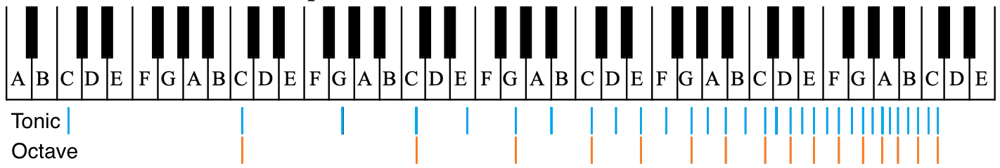
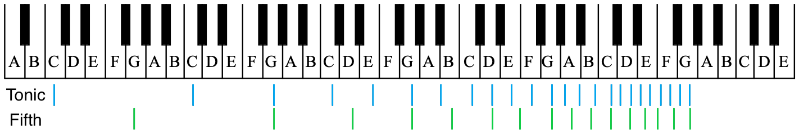
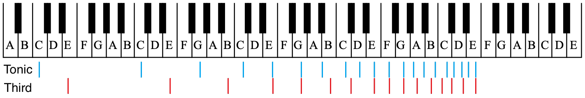

The Physics of Music
An exploration of music through the lense of physics, music theory and neuroscience
Introduction to Musical Sound
Music is a fascinating phenomenon. Some say it was invented, others say it was discovered. The truth is a bit of both.
Music is found in various forms all over the world, but what is it really? And why does it sound good to us?
Let's take a look at some of the fundamentals.
When we hear sounds, we are hearing subtle changes in the pressure in the air around us. Musical notes are vibrations in the air pressure
that oscillate at a regular frequency. Our brains are pattern finding machines, so when we hear this stable vibration it sounds pleasurable to us.
The purest form of this vibration is called a sine wave. Take a look at the chart below to see what a graphical representation of a sine wave looks like.

The sine wave has two main properties: pitch and amplitude. The pitch is associated with the frequency of the oscillation. For instance, the frequency of middle A is 440 Hz, or the number of times the vibration occurs in 1 second. The amplitude is how loud the note sounds to us. When we double this frequency, we get 880 Hz. This is also A, but it is up one octave. The octave is the next instance of the note at the end of the scale. Here is the scale that begins on the note C:

The C scale is easy to understand because it is the only major scale that has no notes that are augmented with sharps(#) or flats(b).
We won't worry about that here. Instead let's focus on the interval between the notes in the scale. An interval refers to the space between two notes.
The octave is the interval between middle A and high A (or between middle C and high C) and is the interval with the most consonance. Notes are said to
be consonant when they vibrate in harmony with each other. The opposite of consonance is dissonance, which is a disharmony between the notes.
Consonance and dissonance are not dichotomous and the interplay between them is what makes music interesting!
Frequency and Chords
So, now we know that the frequency for middle A is 440Hz and its higher octave is 880Hz. Halfway between the two is 660Hz, which is the 5th note
in the scale. In this case, the 5th note would be E. This is next most consonant interval. Keep in mind that humans intuitively knew this before these frequencies
were ever measured. The arrangement and systems of notes were developed purely by how they sounded.
Sitting right between the tonic(the first note in the scale) and the 5th is the (major)3rd. On the A scale that note would be C# with a frequency of 550 Hz. All of these notes played together
is called a major chord. Chords form the structure of the music that is played. Usually, instruments such as piano or guitar will play chords and the other
instruments will play around those chords. There are many, many chords that can be played, but it will be useful to focus in on the major chord. The major chord of any note has the same intervals between the notes.
The A major chord is A C# E A. The C major chord is C E G C. Play around with the chart below to see how all of the notes look when mapped as a sine wave. Notice that the octave,
which is shown by default, takes half the time to make its oscillation (also known as the period) as the tonic note. Tick the checkboxes to add the 5th and 3rd sinewaves.
C Major Chord
Note: The frequency on the x-axis and amplitude on the y-axis are independent of one another, but have been adjusted for visual clarity.
Select a note:
Frequency Breakdown
Chord Inversions
Now here is where things get interesting! Sometimes when playing a chord,
musicians or composers will want to drop the third or the fifth note of a chord down an octave so that
it is now the lowest note in the chord. This is called a chord inversion. So if we started with the
C major chord of C, E, G and drop the E down an octave, we get E C G from lowest to highest note. When we
hear this in the context of a piece of music, we will still hear this as a C chord because of the mathematical relationship
between the notes and their overtones! Chord inversions are a powerful aspect of musical composition and its natural interpretation
is one of the most fascinating.
C Major: 3rd Inversion
C Major: 5th Inversion
If you're curious about how chord inversions add to the depth of the music, listen to this dance classic from
Stardust. I like this example, because the simple
chord progression loops several times with the bassline following the tonic note of the chord. At certain points in the
song, the bassline begins to play other notes in the chord for a subtle but powerful effect. See if you can spot the switch.
Now let's see what the sine waves look like when chords are inverted.
Select a note:
Frequency Breakdown
Harmonic Overtones
Until now, we've been discussing musical sound abstractly in terms of sine waves that are
isolated from one another. This isn't how musical sound is produced or interacts with itself in the real world,
but it illustrates the basic relationship between different notes. Hold on, because we're about to get even more
fundamental and more complex at the same time.
Sine Waves don't exist in nature. They can be produced by machines, but they sound very artificial. Think of a
beeping sound, like a smoke alarm or an emergency broadcast test. The sound is very flat and lacking texture. So
what makes musical instruments (including the human voice), sound so vibrant and beautiful? The answer is harmonic
overtones!
When a note is played on a musical instrument, it naturally resonates with harmonic overtones,
which are multiples of its fundamental frequency. For example, the first harmonic of middle A (440Hz), would be 880Hz, which is also
it's next octave. The second harmonic would be 1320Hz, which is the note E. You may be wondering why the 2nd harmonic isn't the next octave of A.
Harmonics increase linearly, while octaves increase exponentially. The second harmonic is 440Hz x 3, while the second octave is 440Hz x 4 (880Hz x 2).
If you've been keeping track so far, you may remember that E is the perfect 5th of the note A. The third harmonic will once again land on
an A, but the fourth harmonic will land on C#, the major third note in the scale.
What this means is that with enough harmonics, all of the notes of the major scale are present in the overtones of a single note. This
forms the basis of the entire harmonic system. When two notes are played together, say the tonic and its 5th, it is harmonious because
the series of overtones that they produce overlap with each other. This may be easier to understand with a visual aid. Below we have a
keyboard with overlayed overtones of the fundamental and octave, fundamental and 5th and the fundamental and 3rd.



You may have noticed that the 5th notes' overtones lined up with the tonic less often then the overtones of the octave, and the 3rd even less so.
The overtones which don't line up create dissonance, but dissonance is what gives music the push and pull that listeners experience.
Different notes in the scale will have varying amount of dissonance and consonance depending on how many overtones they have in common.
Once again, the mathematical relationship implied by harmonic overtones is intuitively felt and interpreted by the brain in a fascinating way.
Even if the fundamental frequency is missing, we can still hear the fundamental in our minds with a phenomenon known as
a phantom fundamental if the overtones are still present.
Instrument Timbre
These natural overtones also come into play when talking about the different sounds that instruments make. The quality of the sound that come
from instruments is called its timbre (pronounced tam-bur). Different instruments resonate with overtones with different strengths.
The result is a highly variable pallette of sounds that add depth to an arrangement of players.
This image shows the combined wave or the root note and the octave. The two sine waves are summed into a combined sound wave as positve values and
negative values cancel each other out. Instruments will naturally resonate with some overtones stronger than others. Each instrument has its own emphasis on
which overtones are produced most prominently. When different instruments produce various amplitudes of resonating harmonics, different sound
waves are produced as a result. This is what gives each instrument its signature sound. The amplitudes of each overtone can be separated and collected into a Fourier Analysis,
named after the French mathematician Joseph Fourier.
The graph on the left shows the sound waves of a selection of instruments, all playing the note middle A (440Hz), and on the right, an instance of time with the amplitude
of each harmonic.
Select an Instrument:
From here, the entire system of music theory can be derived. Harmonic progression, key modulation and melody are all built on this foundation. In the words of the great Stevie Wonder...